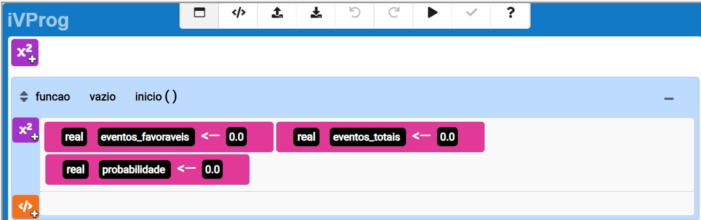

Aula 5: Diagramas de Venn e Probabilidade
Objetivo Geral:
Utilizar diagramas de Venn para visualizar e calcular probabilidades de eventos interseccionais e complementares.
Objetivos Específicos:
- Representar eventos usando diagramas de Venn.
- Calcular probabilidades de eventos interseccionais e complementares.
Desenvolvimento (60 minutos):
Introdução (15 minutos):
Recapitular conceitos anteriores sobre probabilidade condicional.
Introduzir diagramas de Venn como ferramenta visual para representar eventos inter-relacionados.
Definição de Diagramas de Venn (15 minutos):
Explicar a estrutura e a interpretação de diagramas de Venn.
Demonstrar como os diagramas representam eventos e suas interseções.
Aplicação em Probabilidade (20 minutos):
Realizar exemplos práticos de como usar diagramas de Venn para calcular probabilidades.
Destacar situações onde os eventos são interseccionais ou complementares.
Atividade Prática (10 minutos):
Exercícios em grupos para criar e interpretar diagramas de Venn em contextos específicos.
Discussão e Reflexão (10 minutos):
Compartilhar soluções e refletir sobre a utilidade dos diagramas de Venn na compreensão de relações probabilísticas.
Tarefa de Casa:
Problemas adicionais envolvendo diagramas de Venn e cálculos de probabilidades para consolidar a compreensão dos alunos.